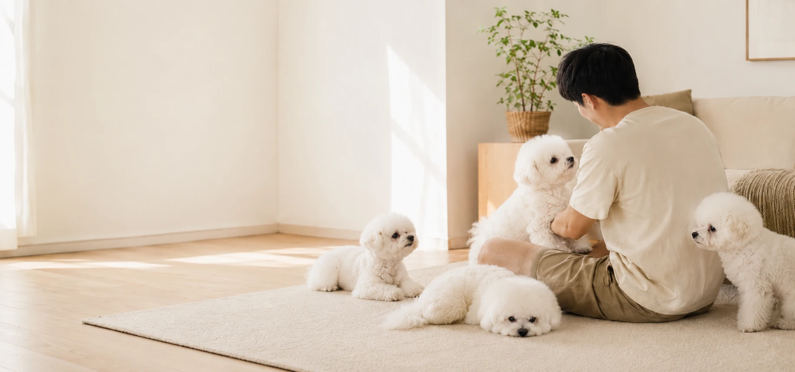
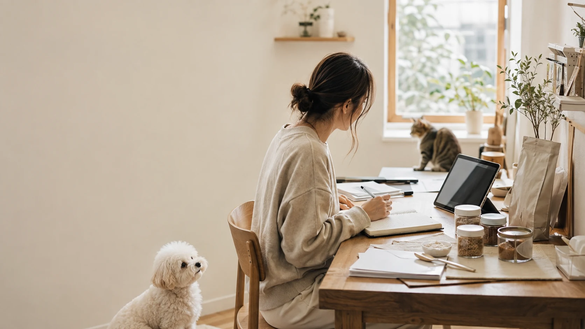

OUR STORY
함께한 시간이,
우리가 만드는 것의 기준이 되었습니다.
매일 밥을 챙기고, 잘 먹는지 살피고,
무엇을 먹일지 한 번 더 생각하는 시간.
PETSRO는 그렇게 함께 살아가는 평범한 일상에서 시작했습니다.
WHERE IT STARTED
잘 먹는 모습이 좋았습니다.
그래서 무엇을 먹이는지도 더 생각하게 됐습니다.
사료를 챙기고, 간식을 고르고, 밥그릇 앞의 반응을 살피는 일은 반려동물과 사는 사람에게 아주 평범한 하루입니다.
하지만 그 하루가 쌓일수록 기준도 조금씩 달라졌습니다. 잘 먹는 즐거움만큼 무엇을 먹이고 있는지 알고 선택하는 일도 중요해졌고, 그 고민이 PETSRO가 제품을 만들기 시작한 이유가 되었습니다.
거창한 아이디어보다, 매일 곁에서 생긴 작은 질문에서 시작했습니다.
BEHIND EVERY PRODUCT
만들고, 살피고, 듣고,
다시 다듬습니다.
좋은 제품은 한 번의 아이디어로 끝나지 않는다고 생각합니다.

어떤 제품이 필요할지 생각하고, 직접 만들어보고, 반려견의 식사와 반응을 살핍니다. 보호자들이 무엇을 궁금해하는지 듣고, 제품과 설명에서 더 나아질 부분을 다시 고칩니다. 이 반복이 PETSRO가 제품을 만들어가는 방식입니다.
OUR JOURNEY
간식에서 시작한 질문은,
매일의 식사로 이어졌습니다.
간식에서 시작한 고민은 야채 토퍼로 이어졌고, 지금도 다음 제품을 고민하고 있습니다.
-
01
STARTED WITH TREATS
간식을 만들며 시작했습니다.
작은 간식 하나도 원료를 고르고 만드는 과정에 따라 달라진다는 것을 배워갔습니다.
-
02
A BIGGER QUESTION
질문이 식사로 넓어졌습니다.
간식에서 시작한 고민은 매일 먹는 식사에 어떤 새로운 선택을 더할 수 있을지로 이어졌습니다.
-
03
VEGGIE TOPPER
새로운 식사 토퍼를 만들었습니다.
국내산 야채를 활용한 Veggie Topper를 개발하며 PETSRO가 제안하는 식사 경험을 구체적인 제품으로 만들었습니다.
-
04
MEETING PET PARENTS
보호자를 직접 만났습니다.
제품을 시장에 소개하고 질문과 반응을 들으며, 더 잘 설명해야 할 것과 더 다듬어야 할 것을 배웠습니다.
-
05
KEEP GROWING
다음 제품을 계속 고민합니다.
한 제품에 머물지 않고 새로운 원료와 더 나은 사용 경험을 살피며 PETSRO의 다음을 준비하고 있습니다.
DISCOVER PETSRO